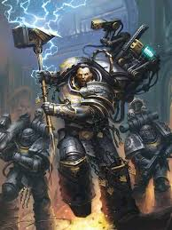

Ferrus Manus
Ferrus Manus, o "Gorgon", é o Primarca da X Legião, os Iron Hands. Ele é a personificação da resiliência, da força bruta e da lógica fria, acreditando que a fraqueza deve ser eliminada a qualquer custo, seja ela biológica ou mental.
Quem é Ferrus Manus
Ferrus aterrissou no mundo hostil de Medusa. Diferente de seus irmãos que foram acolhidos por tribos, Ferrus cresceu enfrentando as aberrações e os elementos do planeta sozinho. Seu maior feito em Medusa foi a luta contra a gigantesca serpente metálica Asirnoth. Ele derrotou a besta afogando-a em magma, e o metal líquido da criatura fundiu-se aos seus braços, criando suas icônicas mãos de metal prateado (Necrodermis). Ele nunca se considerou um deus ou um rei, mas um ferreiro e um general. Quando o Imperador chegou, Ferrus o desafiou para um duelo de força que abalou montanhas. Ao perder, ele jurou lealdade, reconhecendo no Imperador uma força superior à sua.
Principais Características:
A Carne é Fraca: Ferrus era obcecado pela autossuperação. Ele acreditava que o esforço constante e a dor temperavam a alma. No entanto, ele ironicamente planejava remover os implantes cibernéticos de sua legião após a guerra, temendo que eles perdessem a humanidade.
Mestre Ferreiro: Ele era um dos artesãos mais habilidosos entre os Primarcas, rivalizando apenas com Vulkan e Fulgrim. Ele forjava armas que eram verdadeiras obras de arte mortais.
Pragmatismo Brutal: Ferrus não tinha paciência para diplomacia, artes ou sentimentalismos. Para ele, a guerra era uma equação de força e resistência.
Irmandade com Fulgrim: Apesar de suas personalidades opostas, Ferrus e Fulgrim eram melhores amigos, unidos pelo respeito mútuo pelo artesanato e pela perfeição.
Principais Feitos:
A Conquista de Sistemas Hostis:
Isstvan V: No início da Heresia de Horus, Ferrus foi tomado por uma fúria cega ao descobrir a traição de Fulgrim. Ele liderou a vanguarda das legiões leais em Isstvan V. Sua impaciência e desejo de punir o traidor o levaram a avançar rápido demais, ficando isolado de seus aliados.
O Duelo Final contra Fulgrim: No centro do caos de Isstvan V, Ferrus e Fulgrim se enfrentaram. Foi um combate entre a força bruta e a perfeição graciosa. Ferrus estava prestes a vencer, mas Fulgrim, possuído por um demônio da espada que carregava, desferiu um golpe fatal.
Atualmente: Ferrus Manus está confirmadamente morto, sendo o primeiro Primarca a cair durante a Heresia de Horus. A morte de Ferrus quebrou o espírito das legiões leais e causou um trauma profundo nos Iron Hands, que mergulharam ainda mais na cibernética para tentar "compensar" a perda de seu pai. Durante a Guerra na Webway, o Imperador invocou uma legião de espíritos vingativos (conhecida como a Legião dos Condenados) para lutar contra os demônios. Entre eles, foi vista uma figura colossal e sem cabeça que muitos acreditam ser o espírito de Ferrus Manus, continuando a servir ao Imperador mesmo após a morte.
Estilo de combate:
- Guerra de Atrito e Poder
- Resiliência